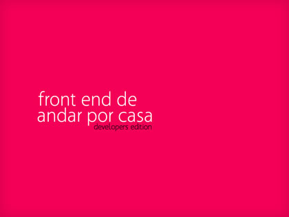

front end de andar por casa
Hola!
Estas son las diapositivas y las anotaciones ampliadas de un cursito que di viernes 11 y sábado 12 de septiembre de 2009. Muchas diapositivas de las originales se han suprimido, porque estaban ahí para dar continuidad al curso y no tienen mucho sentido en una sucesión escrita.
El propósito era aprender técnica y de paso un poquito de filosofía a la hora de afrontar problemas más o menos comunes en front. Casi todo el tiempo hablamos de xhtml y css sin ningún orden y ningún concierto, por desgracia el tiempo no daba para profundizar en técnicas javascript. Suponíamos que todo el mundo había trabajado alguna maqueta para poder saltarnos todos los conceptos básicos.